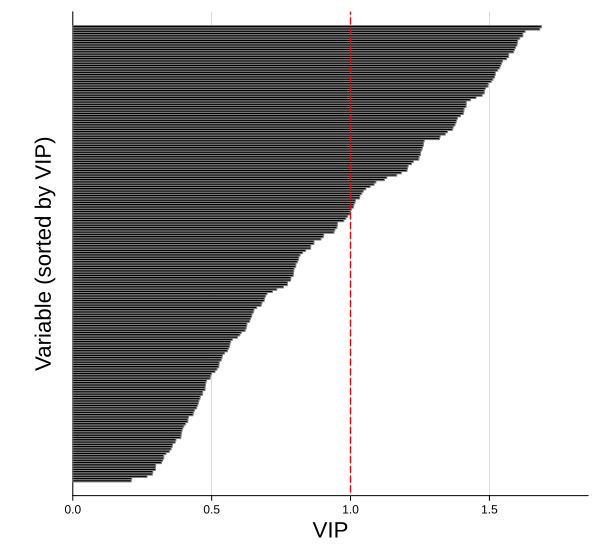
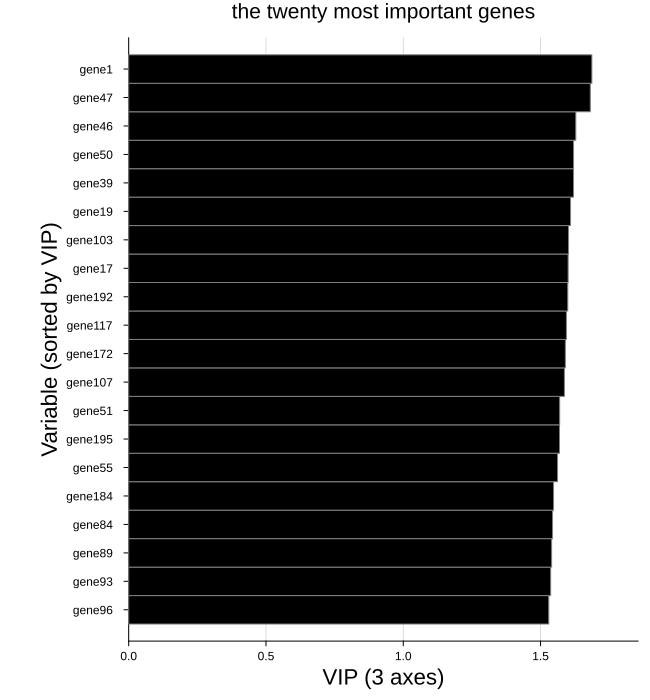
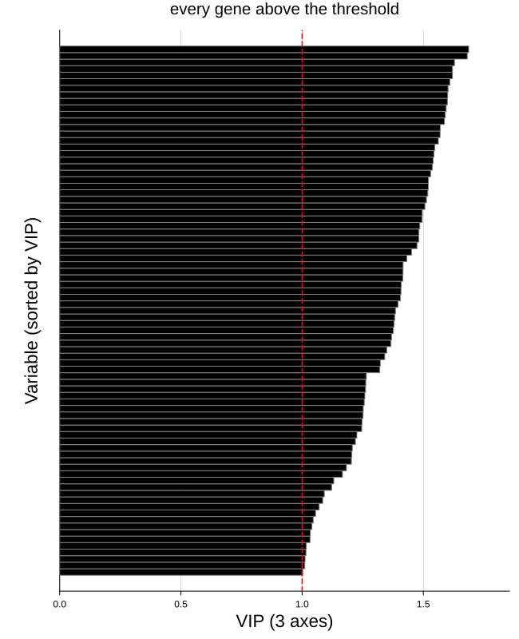
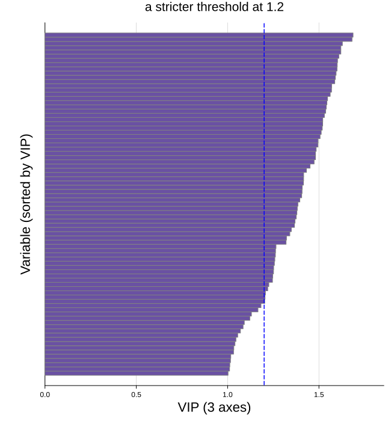

VIP plot
The VIP plot ranks the variables by their Variable Importance in Projection and lays them out as horizontal bars, the largest at the top, with a dashed line at the threshold of one.
plot_vip(vips; comp = 0, varnames = ..., above = false, ntop = 0, kwargs...)VIP scores are scaled so their mean square is one, which is what makes the threshold meaningful: a variable above the line contributes more than average, one below it less. Over many variables the sorted bars read as a smooth curve, and the number of important variables is simply where that curve crosses the line.
The VIP is defined for the discriminant models alone and comes from the vip function:
| Model | Call |
|---|---|
plsda | plot_vip(vip(m)) |
splsda | plot_vip(vip(m)) |
The other models store no VIP. Their variable importance is read from the loadings plot instead.
Setup
using BigRiverEssence
using BigRiverPlots
using Plots
using StableRNGsA simulated example
This notebook uses a wider simulation than the others — two hundred variables rather than twenty — because the sorted bars only read as a curve when there are enough of them to form one. On twenty variables we would see twenty fat bars; on two hundred we see the shape that real data gives.
Three latent signals drive the variables and the class is read off the first, so a handful should stand out well above the threshold while the rest fall below it.
rng = StableRNG(20240801)
n = 120 # observations
p = 200 # variables
latent = randn(rng, n, 3)
X = latent * randn(rng, 3, p) .+ 0.3 .* randn(rng, n, p)
y = [latent[i, 1] > 0.4 ? "a" : latent[i, 1] < -0.4 ? "c" : "b" for i in 1:n]
vnames = ["gene$(i)" for i in 1:p]
m = plsda(X, y, 3)
V = vip(m)
size(V) # variables by components(200, 3)The default plot
vip returns a matrix of variables by components. The scores are cumulative — column h is the importance built up through components 1 to h — so the last column is the overall importance, and that is the one drawn by default.
The variables are always sorted, largest at the top. That is not optional: the layout is a ranked curve, not a plot in variable order, and the ranking is the shape we came to read.
plot_vip(V)
Modifying the plot
Three things are worth separating.
Which column — comp picks a component, defaulting to 0 for the last. Because the scores are cumulative, comp = 1 gives the importance from the first component alone, which is a different and usually narrower question.
How many variables — ntop keeps a fixed count of the highest scorers, while above keeps however many clear the threshold, so the count depends on the data. A third knob, maxnames, does not filter anything — it only decides whether the variable names appear on the axis, since past a few dozen there is no room for a tick each.
The threshold line — threshold moves it, thresholdcolor colors it, thresholdline = false removes it.
Naming and trimming
With two hundred variables the names cannot be shown, so the axis is left bare. Cut the set down with ntop and the names appear, provided the count falls under maxnames — which defaults to thirty.
Here we take the twenty most important variables and name them. thresholdline = false makes the line disappear.
plot_vip(V;
varnames = vnames,
ntop = 20,
xlabel = "VIP ($(m.ncomp) axes)",
title = "the twenty most important genes",
thresholdline = false,
size = (650, 700))
Keeping only what clears the line
above = true asks a different question: not "the top twenty" but "however many are actually important". The count is whatever the data gives, which is usually what we want when reporting a selection rather than picking a round number.
Raising maxnames lets the names show even when more variables survive than the default cutoff allows.
plot_vip(V;
varnames = vnames,
above = true,
maxnames = 60,
xlabel = "VIP ($(m.ncomp) axes)",
title = "every gene above the threshold",
size = (650, 800))
The line, the bars, and the rest
The threshold sits at one by default, which is the convention. Moving it to a stricter value is a way of tightening the selection, and since above filters against whatever threshold is set to, the two work together — threshold = 1.2, above = true keeps only the variables clearing the stricter bar.
vipcolor fills the bars and vipedgecolor outlines them. Everything else is a standard attribute and yields to what we pass.
plot_vip(V;
varnames = vnames,
threshold = 1.2,
above = true,
thresholdcolor = :blue,
vipcolor = "#6a51a3",
vipedgecolor = :grey,
maxnames = 40,
xlabel = "VIP ($(m.ncomp) axes)",
title = "a stricter threshold at 1.2",
size = (650, 700))